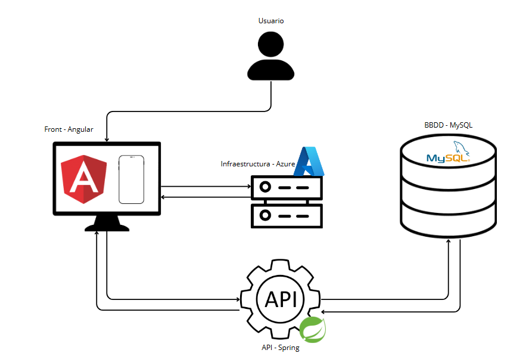

Diagrama de Componentes
El diagrama de componentes muestra la arquitectura global de la aplicación TECOCINAMOS: front-end en Angular, back-end en Spring Boot, base de datos MySQL y despliegue en Azure.

Descripción de Componentes
-
Frontend (Angular):
- AppComponent (root)
- MenuComponent (barra de navegación)
- PlatoListComponent (lista de platos)
- PlatoDetalleComponent (detalle de plato)
- CarritoComponent (carrito de compras)
- LoginComponent, RegisterComponent
- AdminPlatosComponent, AdminPedidosComponent, AdminUsuariosComponent
- Services (AuthService, ApiService, PedidoService, FacturaService)
-
Backend (Spring Boot):
- Controllers (UsuarioController, PlatoController, PedidoController, FacturaController, ContactController, etc.)
- Services (UsuarioService, PlatoService, PedidoService, FacturaService, MailService, etc.)
- Repositories (UsuarioRepository, PlatoRepository, PedidoRepository, etc.)
- Security (JwtAuthFilter, SecurityConfig, CustomUserDetailsService)
- Utilidades (LogAuditoriaUtil, PdfGeneratorUtil)
- Model (entidades JPA: Usuario, Plato, Pedido, Ingrediente, etc.)
-
Base de Datos (MySQL):
- Tablas: rol, usuario, estado, pedido, detalles_pedido, categoria, plato, plato_ingrediente, ingrediente, proveedor, alergenos, ingrediente_alergeno, log_auditoria
-
Infraestructura:
- Azure App Service: despliegue del JAR del backend.
- Azure Database for MySQL: base de datos en la nube.
- Hostinguer: despliegue de Angular.